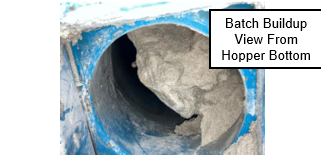

Clearing Plugs from the Batch System
Follow this procedure to clear plugs from the batch system:
-
Note:To clear clogs from the day bin, strike the outside of the bin using a rubber mallet.
Tools Required: Rubber mallet, pry bar.PPE Required: Respirator or PAPR.
Inhalation hazard.
Silica hazard.
Pinch hazard.
- Open the inspection door to remove hard batch that might be blocking the opening of the hopper.
Note:Metallic hammers can damage equipment and cause more frequent plugging.

-
If the surge hopper needs to be unclogged from the bottom:
- Inform the forming operator about the situation.
- Stop charging.
- Complete steps 5.2 through 5.9
-
At the Melter workstation, go to the Melter JF screen and click the
Overview tab.
- Click the Charger Profile button, and check the Suppress checkbox.

-
At the Zippe Integration touch panel, Lock the surge hopper to prevent
more batch from being loaded.
- Click the Lock/Unlock button for the surge hopper, at the bottom of the screen.
- The screen will prompt to either lock or unlock.
Note:The picture shows the hopper locked.

-
Go to the Melter JF screen and select JF Melter Energy from the
dropdown menu.
- Verify the oxygen-gas ratio is 2.30.
- If the melter temperature is in manual, lower the Gas Flow SP in increments of 1.34 Nm³/h (0.05 MSCFH) to keep the melter temperature close to the operational temperature—but below 1371 °C (2500 °F).
Note:Minimum gas flow is 8.0 Nm³/h (0.30 MSCFH) for 1 MMBtu/h burners and 13.4 Nm³/h (0.50 MSCFH) for 2 MMBtu/h burners.

-
Note:Perform the following tasks:
Tools Required: Rubber mallet, pry bar, vacuum, screwdriver, fire blanket.PPE Required: Respirator or PAPR.
Dust hazard.
Toxic materials.
Pinch hazard.
Fall hazard. Utilize 3 points of contact on ladders.
LO/TO
- Close the surge hopper gate.
- LO/TO the charger.
- Disconnect the charger from the chopper.
- Remove the retaining nut on the front left leg of the charger.
- Remove the brakes from the rear wheels and pull the charger away from the melter.
- Cover the chopper opening using a fire blanket to prevent exhaust from puffing out.
- Slowly open the hopper gate.
- Use a pry bar to break up batch buildup.
- Push the charger back into position and secure it in place.
- Remove the LO/TO
Note:Do not damage nearby instruments, such as the moisture analyzer.


-
At the workstation, go to the Melter JF screen and select JF Melter
Energy from the dropdown menu.
- Enter in the desired oxygen-gas ratio (typically 2.30).
- Begin increasing gas flow to maintain melter temperature above 1316 °C (2400 °F).
- Click the Apply to All Burners button

Purpose/Application
Describes how to clear plugs from the batch system.
PPE Required
General
Bump cap/hard hat, safety glasses with foam liner, proper hearing protection, fire-resistant long-sleeved shirt, safety toe boots.
Additional PPE When Required
IR shade 5 lensed glasses/shield.
Safety Hazards
Respirable Crystalline Silica
Crystalline silica has been classified as a human lung carcinogen. Breathing crystalline silica dust can cause silicosis, which in severe cases can be disabling, or even fatal.

Safety Controls
- The Hazard Communication Standard (HCS) requires chemicals to have Safety Data Sheets (SDS). See the SDS for chemicals listed in this SOP for additional hazards, first aid measures, toxicological information, accidental release measures, and handling/storage of the chemical.
- Exposure to heat can cause illness and death. The most serious heat illness is heat stroke. Other heat illnesses include heat exhaustion, heat cramps, and heat rash. Take precautions to avoid heat illness any time temperatures are high, and the job involves physical work.
- Hot surfaces are present in areas where hot molten glass is produced. Use caution and proper hand and body protection.
- Some tasks require specific PPE and tools/equipment to perform tasks, and may have specific safety hazards.
- Review the Emergency Action Plan before performing work.
- When Performing or Removing a LO/TO- Notify the Affected Workers in the Area.
Tools & Equipment
- Rubber mallet, pry bar, vacuum, screwdriver, fire blanket.
- SCADA Melter workstation.
Comments
Before starting work:
- Read this document thoroughly.
- Complete the required training.
- Wear the required PPE.
This SOP uses Streator screens and images.
Related Resources
- BAT-ET-101B Resetting the Batch System After an E-Stop or Fault
Clearing Plugs from the Batch System
Follow this procedure to clear plugs from the batch system:
-
Note:To clear clogs from the day bin, strike the outside of the bin using a rubber mallet.
Tools Required: Rubber mallet, pry bar.PPE Required: Respirator or PAPR.
Inhalation hazard.
Silica hazard.
Pinch hazard.
- Open the inspection door to remove hard batch that might be blocking the opening of the hopper.
Note:Metallic hammers can damage equipment and cause more frequent plugging.
-
If the surge hopper needs to be unclogged from the bottom:
- Inform the forming operator about the situation.
- Stop charging.
- Complete steps 5.2 through 5.9
-
At the Melter workstation, go to the Melter JF screen and click the
Overview tab.
- Click the Charger Profile button, and check the Suppress checkbox.
-
At the Zippe Integration touch panel, Lock the surge hopper to prevent
more batch from being loaded.
- Click the Lock/Unlock button for the surge hopper, at the bottom of the screen.
- The screen will prompt to either lock or unlock.
Note:The picture shows the hopper locked.
-
Go to the Melter JF screen and select JF Melter Energy from the
dropdown menu.
- Verify the oxygen-gas ratio is 2.30.
- If the melter temperature is in manual, lower the Gas Flow SP in increments of 1.34 Nm³/h (0.05 MSCFH) to keep the melter temperature close to the operational temperature—but below 1371 °C (2500 °F).
Note:Minimum gas flow is 8.0 Nm³/h (0.30 MSCFH) for 1 MMBtu/h burners and 13.4 Nm³/h (0.50 MSCFH) for 2 MMBtu/h burners.
-
Note:Perform the following tasks:
Tools Required: Rubber mallet, pry bar, vacuum, screwdriver, fire blanket.PPE Required: Respirator or PAPR.
Dust hazard.
Toxic materials.
Pinch hazard.
Fall hazard. Utilize 3 points of contact on ladders.
LO/TO
- Close the surge hopper gate.
- LO/TO the charger.
- Disconnect the charger from the chopper.
- Remove the retaining nut on the front left leg of the charger.
- Remove the brakes from the rear wheels and pull the charger away from the melter.
- Cover the chopper opening using a fire blanket to prevent exhaust from puffing out.
- Slowly open the hopper gate.
- Use a pry bar to break up batch buildup.
- Push the charger back into position and secure it in place.
- Remove the LO/TO
Note:Do not damage nearby instruments, such as the moisture analyzer.
-
At the workstation, go to the Melter JF screen and select JF Melter
Energy from the dropdown menu.
- Enter in the desired oxygen-gas ratio (typically 2.30).
- Begin increasing gas flow to maintain melter temperature above 1316 °C (2400 °F).
- Click the Apply to All Burners button
Approval
|
Person |
Role |
|---|---|
|
Michael Hu |
Process Development Squad Lead |
|
David Jepsen |
Melter Training Specialist |
|
Phillip Wilson |
EHS Continuous Improvement Manager |
Revision History
|
2024-01-12 |
Approved by Michael Hu, Process Development Squad Lead |
|
Original Issue |